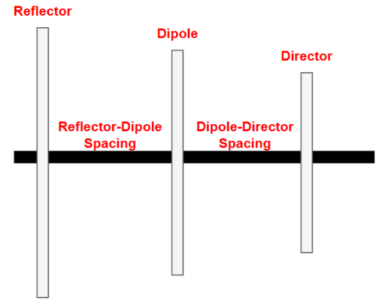
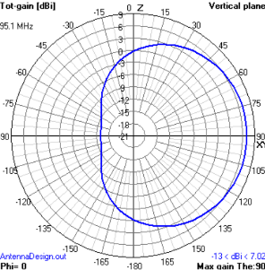
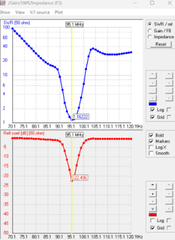
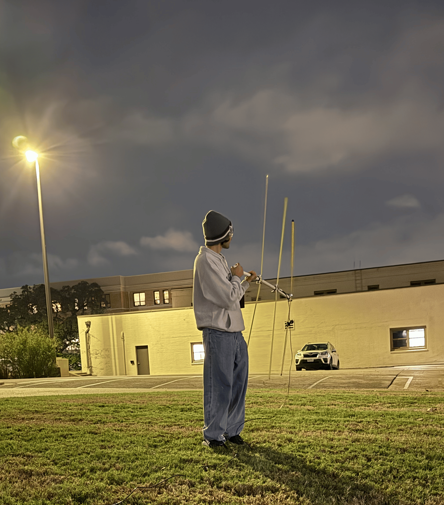
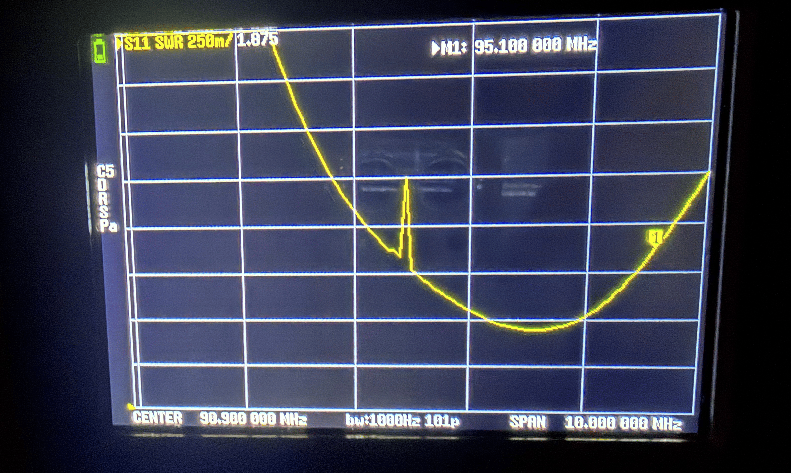
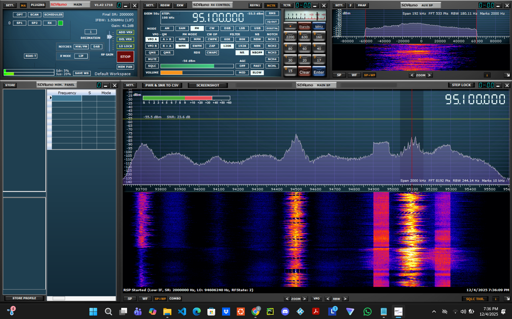

Context:
Antennas are devices that convert electrical energy into electromagnetic waves for transmission or vice versa for reception. A half-wave dipole is the most basic antenna, having a total length equal to half the wavelength of the operating frequency. A Yagi (or Yagi-Uda) antenna is a directional antenna that adds parasitic elements to a half-wave dipole. It consists of a driven element (dipole), a reflector placed behind it, and one or more directors placed in front. These parasitic elements interact via electromagnetic coupling. The reflector pushes energy forward while the director focuses energy on a forward direction. This increases antenna gain while producing a highly directional radiation pattern.
FM radio signals are electromagnetic waves that are transmitted in the 88-108 MHz frequency band. When FM waves reach an antenna, the electric field of the wave induces an alternating voltage along the conductors of the antenna. The induced voltage can then be demodulated and processed to extract audio information from the transmitted frequency.
Design & Simulations:
The goal was to design, simulate, construct, and test a 95.1 MHz Yagi antenna that would be capable of connecting to Candy 95.1, an FM broadcast of pop music across Brazos County. Critical measurements needed in designing this antenna are shown below. It is assumed that 0.1 mm is the thickness of our conducting material, giving it an effective radius of 0.05 mm. It is also assumed that the ground plane is free space.

The antenna geometry was modeled using 4nec2. This 3-element Yagi antenna calculator was used to find a suitable geometry to operate at 95.1 MHz. A good antenna must have a voltage standing wave ratio (VSWR) less than 1.5 at the operating frequency. Initial tests showed the VSWR to be too high, with the SWR curve centered toward a higher frequency. This indicated the geometry was too short, and adding 2% to all lengths shifted resonance downward. Thus, VSWR at 95.1 MHz became 1.16, centered and ready for fabrication. Below are all geometry values, the azimuthal antenna pattern, and the VSWR curve.
| Antenna Part | Length (Meters) |
|---|---|
| Reflector Length | 1.594 |
| Dipole Length | 1.524 |
| Director Length | 1.418 |
| Reflector to Dipole Spacing | 0.394 |
| Dipole to Director Spacing | 0.394 |


Construction
This construction guide video was used as guidance for building the antenna. A Bill of Materials (BOM) was generated for all material costs, with soldering stations and testing equipment being provided.
| Part Description | Quantity | Unit Price | Total Price |
|---|---|---|---|
| 25-foot 1-inch wide Steel Tape Measure | 2 | $5.97 | $11.94 |
| 10-foot piece of 3/4 inch Schedule 40 PVC Tube | 1 | $4.86 | $4.86 |
| 3/4 inch PVC Cross Connectors | 2 | $5.21 | $10.42 |
| 3/4 inch PVC T Connector | 2 | $1.72 | $0.86 |
| Emery Cloth Sandpaper (3 pack) | 1 | $5.98 | $5.98 |
PVC pipes were measured and cut to create the spacing between elements. A final PVC length was added to the reflector side as the handle for the antenna. The dipole tape measure was cut in half with the end sanded to expose conductive material, making soldering easier. The dipole was then connected to the middle PVC junction with stainless hose clamps. The other two elements were cut to their appropriate lengths and secured to their respective junction points using additional stainless hose clamps. Electrical tape was added to the ends of all tape measure lengths for safety. For soldering, two copper wires were soldered onto a BNC connector, then soldered to the conductive ends of each half of the split dipole. This created the driven element of the antenna.

Testing & Conclusion
Upon testing, the antenna exhibited an impedance value of 57.56 ohms and an inductance of 17.89 nH. This is a realistic deviation from theory, with 50 ohms being an ideal match for resonance and maximum power transfer. The SWR curve of the fabricated antenna was measured with a NanoVNA. VSWR at 95.1 MHz was 1.879, which is higher than the simulated value of 1.16 due to practical mismatches and reflections.

The fabricated antenna successfully received the 95.1 MHz FM broadcast using an SDR receiver running SDRuno. Audio playback confirmed the antenna functioned as intended despite measured VSWR exceeding simulated predictions. Specifically, Tate McRae's "It's ok I'm ok" was heard with little audible distortion.
